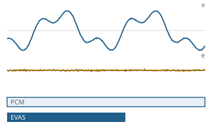

Jeder Abtastwert kommt unverändert zurück
Funktionsübersicht für die Präsentation des envisionz-Frameworks, Stand 28.09.2026. Ein eigener verlustfreier Audiokodierer mit eigenem Stromformat EVAS: Stereozerlegung, feste und LPC-Prädiktoren, Golomb-Rice oder Bereichskodierer mit Kontextmodell, Stapellauf über ganze Sammlungen – und als erster Baustein des verlustbehafteten Weges MDCT und Fensterbank. Je Verfahren: Zweck, Methoden, Einsatz im Framework, Anwendungen, Beispiele. Die Beispiele sind gekürzt.

Lpcpraediktor und Kodierer gerechnet: Signal, Residuum und Stromgröße; der Strom wurde bitgenau zurückgelesen.Grundsätze des Moduls
Haeufigkeitsmodell und Restmodell benutzen Kodierer und Dekodierer gemeinsam; residuum und ruecktransformiere stehen in derselben Klasse.long. Der Rundungsfehler wird auf den nächsten Koeffizienten weitergereicht.java.util.zip; die einzige Abhängigkeit ist framework-audiometrik für Ganzsignal.Kodierer und Dekodierer envisionz.audiocodec
Kodierer und Dekodierer
Je Rahmen zuerst die billigste Stereozerlegung (unabhängig, links/Seite, rechts/Seite, Mitte/Seite), dann je Teilkanal die günstigste von vier Teilrahmenarten: konstant, roh, fester Prädiktor der Ordnung 0…4, LPC bis Ordnung 32. Das Residuum geht an Golomb-Rice oder an den Bereichskodierer. Vorgabe: Blockgröße 4096, Rice, volle LPC-Ordnung. Der Dekodierer bricht bei einem beschädigten Rahmen ab oder überspringt ihn im nachsichtigen Betrieb. Hintergrund, Formeln und Pseudocode →
Methoden
new Kodierer().blockgroesse(n).verfahren(v).maxLpcOrdnung(o).praezision(p)kodiere(Ganzsignal)→byte[];SYNCHRONWORT = 0xFF5Anew Dekodierer().nachsichtig(b).dekodiere(strom)→Ganzsignal;uebersprungeneRahmen()Dekodierer.liesKopf(strom),Dekodierer.pruefsummePasst(strom, signal)
Eingesetzt in
Wofür
Audioarchive verlustfrei verkleinern; Grundlinie und Rahmen für einen späteren verlustbehafteten Codec.
Beispiel – kodieren, zurückholen, vergleichen
Ganzsignal quelle = Wavleser.liesGanz(Path.of("titel.wav"));
byte[] strom = new Kodierer().verfahren(Stromkopf.VERFAHREN_VERLUSTFREI_BEREICH).kodiere(quelle);
Ganzsignal zurueck = new Dekodierer().dekodiere(strom);
boolean bitgenau = quelle.gleicht(zurueck);Stromformat EVAS envisionz.audiocodec
Stromkopf und Pruefsumme – die Felder, deren Fehlen bei MP3 zum Problem wurde
Kopf von 36 Byte mit Kennung „EVAS“, Fassung, Verfahrenskennung, Abtastrate, Kanalzahl, Wortbreite, Gesamtzahl der Werte, Vor- und Nachlauf, Nennblockgröße und einer 64-Bit-Prüfsumme über alle Abtastwerte. Ohne Gesamtzahl und Vor-/Nachlauf lässt sich nicht lückenlos abspielen, ohne Verfahrenskennung überlebt ein Format den ersten Codec nicht. Jeder Rahmen trägt Synchronwort, Rumpflänge, Rahmennummer und CRC-16; die Schreibstelle folgt aus der Rahmennummer, nicht aus einem Zähler. Hintergrund, Formeln und Pseudocode →
Methoden
Stromkopf.lies(d, pos),alsBytes(),dauerSekunden(),verfahrensname(v)- Verkettete Setzer:
abtastrate,kanaele,bitsJeWert,gesamtwerte,vorlauf,nachlauf,nennblockgroesse,pruefsumme,verfahren VERFAHREN_VERLUSTFREI_RICE = 1,VERFAHREN_VERLUSTFREI_BEREICH = 2Pruefsumme.crc16(daten, von, bis),Pruefsumme.ueberWerte(kanaele)
Eingesetzt in
Wofür
Lückenlose Wiedergabe, Wiederaufsetzen nach Beschädigung, mehrere Verfahren in einem Format.
Beispiel – Steckbrief eines Stroms
Stromkopf k = Dekodierer.liesKopf(Files.readAllBytes(Path.of("titel.evz")));
System.out.println(k + ", " + k.dauerSekunden() + " s, Vorlauf " + k.vorlauf());Prädiktion und Stereo envisionz.audiocodec
Festpraediktor, Lpcpraediktor, Stereomodus
Feste Prädiktoren der Ordnung 0…4 kosten keine Koeffizienten. LPC: Autokorrelation, Levinson-Durbin, Ordnungsschätzung, Quantisierung mit weitergereichtem Rundungsfehler (Vorgabe 15 Bit), Summe in long – bei Ordnung 32, 25 Bit Wortbreite und 15-Bit-Koeffizienten wird die 32-Bit-Grenze deutlich überschritten. Die Stereozerlegung wählt je Rahmen nach einer Kostenschätzung. Feste Prädiktoren: Hintergrund, Formeln und Pseudocode → LPC: Hintergrund, Formeln und Pseudocode → Stereozerlegung: Hintergrund, Formeln und Pseudocode →
| größte LPC-Ordnung | Verhältnis (erzeugtes Material, Rice) |
|---|---|
| 0 (nur feste Prädiktoren) | 1,7002 : 1 |
| 8 | 1,7348 : 1 |
| 16 | 1,7359 : 1 |
| 32 | 1,7362 : 1 |
Methoden
Festpraediktor.residuum(werte, ordnung),ruecktransformiere(werte, rest, ordnung),besteOrdnung(werte, max)Lpcpraediktor.autokorrelation,levinsonDurbin(r, max),schaetzeOrdnung,quantisiere(koeff, praezision)Lpcpraediktor.residuum(werte, ordnung, koeff, verschiebung),ruecktransformiere(...)Stereomodus.zerlege(links, rechts, modus),setzeZusammen(a, b, modus),kostenschaetzung(a, b)
Eingesetzt in
Lpcpraediktor.MAX_ORDNUNG als Vorgabe für -lpc:intern: Kodierer, DekodiererWofür
Redundanz zwischen Abtastwerten und Kanälen entfernen, bevor entropiekodiert wird.
Entropiekodierung envisionz.audiocodec
Restkodierung, Bereichskodierer, Haeufigkeitsmodell, Restmodell
Verfahren 1: Golomb-Rice mit Zickzack-Abbildung, abschnittsweise eigener Ordnung (Partitionsordnung bis 6) und einem Escape-Fall für Rohwerte. Verfahren 2: übertragsfreier Bereichskodierer nach Subbotin; kodiert wird die Größenklasse des Residuums mit der Größenklasse des Vorgängers als Kontext. Weil die Modelle je Rahmen neu starten, sind die Klassenmodelle vorbelegt und das oberste freie Bit wird mitmodelliert – ohne ein übertragenes Bit mehr. Golomb-Rice: Hintergrund, Formeln und Pseudocode → Bereichskodierer und Kontextmodell: Hintergrund, Formeln und Pseudocode →
| Block | Bereich gegen Rice vorher | nur Vorbelegung | mit Spitzenbit |
|---|---|---|---|
| 1024 | +2,70 % | +2,16 % | +1,62 % |
| 4096 | +0,38 % | +0,18 % | −0,53 % |
| 16384 | −0,82 % | −1,09 % | −1,89 % |
Methoden
Restkodierung.plane(rest)→Rezept(kosten()),schreibe(bs, rest, rezept),lies(bl, laenge),zickzackBereichskodierer.kodiere(kum, haeufigkeit, gesamt),kodiereRoh,abschluss();Bereichsdekodierer.hole,uebernimmHaeufigkeitsmodell(symbolzahl | anfang[]),kodiere(bk, s),dekodiere(bd),aktualisiere(s)Restmodell(vorbelegt),kodiere(bk, rest),dekodiere(bd, laenge);Bitschreiber,Bitleser(liesUnaer,schreibUnaer)
Eingesetzt in
Wofür
Residuen nahe an ihrer Entropie speichern; der Bereichskodierer unterschreitet ein Bit je Symbol, wo Huffman das nicht kann.
Stapellauf envisionz.audiocodec
Stapellauf und Stapelergebnis – Grundlinie über eine ganze Sammlung
Jede Datei wird mit beiden Verfahren kodiert und zurückgeholt; festgehalten werden Rohgröße, beide Stromgrößen, Bitgenauigkeit, Kodierdauer und die Differenz in Prozent. Die Sammelbilanz ist über die Summen der Bytes gewichtet, nicht als Mittel der Einzelverhältnisse – sonst zählte eine kurze Datei so viel wie ein langes Stück. Hintergrund, Formeln und Pseudocode →
Methoden
new Stapellauf().blockgroesse(n).maxLpcOrdnung(o),pruefe(name, ganzsignal)→StapelergebnisanzahlGeprueft(),anzahlAbweichend(),anzahlGescheitert(),summeRoh(),summeRice(),summeBereich()bilanz(),schreibCsv(ziel);Stapelergebnis.riceVerhaeltnis(),differenzProzent(),alsZeile()
Eingesetzt in
Wofür
Codec-Änderungen an einer echten Sammlung bewerten; Rückweg über viele Dateien belegen.
Beispiel – ein Verzeichnis durchlaufen
Stapellauf lauf = new Stapellauf().blockgroesse(4096);
for (Path p : dateien) lauf.pruefe(p.getFileName().toString(), Wavleser.liesGanz(p));
System.out.print(lauf.bilanz());
lauf.schreibCsv(Path.of("stapel.csv"));MDCT und Fensterbank envisionz.audiocodec
Mdct, Fensterbank, Fensterart, Fensterform – die Transformation des verlustbehafteten Weges
Noch ohne Quantisierer, und das mit Absicht: solange nichts quantisiert wird, muss der Rückweg bitgenau sein. Mdct rechnet 2M Werte zu M Koeffizienten über eine DCT-IV mit eigener komplexer FFT der Länge M/2; der Rückweg allein liefert das Zeitbereichs-Aliasing, erst die gefensterte Überlagerung hebt es auf. Fensterformen Sinus und KBD (Alpha 4 lang, 6 kurz, wie AAC), Fensterarten LANG, START, KURZ (acht Blöcke) und STOPP. Die linke Flanke hat die Form des vorigen Rahmens. MDCT und TDAC: Hintergrund, Formeln und Pseudocode → Fenster und Blockumschaltung: Hintergrund, Formeln und Pseudocode →
Methoden
Mdct(m),vorwaerts(x, von, aus, ab),rueckwaerts(koeff, von, y)Fensterbank(m)(Vorgabe 1024),analyse(...),synthese(...),rahmenZahl(laenge)Fensterbank.planen(kurzGewuenscht[]),pruefeFolge(folge)zerlege(pcm, folge, formen),setzeZusammen(koeff, folge, formen, laenge),setzeZusammenRoh(...)
Eingesetzt in
Wofür
Grundlage eines eigenen verlustbehafteten Codecs; noch nicht im Stromformat.
Beispiel – kurze Blöcke planen, zerlegen und bitgenau zurück
Fensterbank fb = new Fensterbank();
int n = fb.rahmenZahl(pcm.length);
boolean[] kurz = new boolean[n]; kurz[5] = true; // z. B. ein Einschwingvorgang
Fensterart[] folge = Fensterbank.planen(kurz); // … START, KURZ, STOPP …
Fensterform[] formen = new Fensterform[n]; Arrays.fill(formen, Fensterform.KBD);
double[][] koeff = fb.zerlege(pcm, folge, formen);
int[] zurueck = fb.setzeZusammen(koeff, folge, formen, pcm.length);Kommandozeile envisionz-commandline-audiocodec · cmd.audiocodec
Audiocodec und Flacvergleich
Werkzeuge im Hausformat -name:wert: kodiere, dekodiere, pruefe (beide Verfahren im Speicher hin und zurück), stapel, steckbrief und flac. Für den Vergleich wird FLAC nicht eingebunden, sondern als fremdes Programm gerufen (flac -8); fehlt es, stehen die eigenen Zahlen trotzdem da, dazu der Link https://xiph.org/flac/download.html. Rückgabewerte: 0 in Ordnung, 10 nicht bitgenau, 11 beschädigte Rahmen übersprungen, 12 Datei gescheitert, 13 FLAC nicht gefunden, 1/2/3 Aufruf-, Schalter-, sonstiger Fehler.
Beispiele
Audiocodec -op:kodiere -in:x.wav -out:x.evz -block:4096 -verfahren:2
Audiocodec -op:dekodiere -in:x.evz -out:y.wav -nachsichtig:ja
Audiocodec -op:pruefe -in:x.wav -lpc:0
Audiocodec -op:stapel -verz:./sammlung -rekursiv:ja -ausgabe:stapel.csv
Audiocodec -op:flac -in:./sammlung -bericht:vergleich.mdEinsatzmatrix im Framework
Welche Module welche Teile heute nutzen, im Quelltext gezählt (ohne Proben).
| Modul | Kodierer / Dekodierer | EVAS-Kopf | Prädiktion | Entropiekodierung | Stapellauf | MDCT / Fensterbank | Wofür |
|---|---|---|---|---|---|---|---|
| commandline-audiocodec | ● | ● | ● | ● | Kodieren, Dekodieren, Prüfen, Stapellauf, Steckbrief, FLAC-Vergleich |